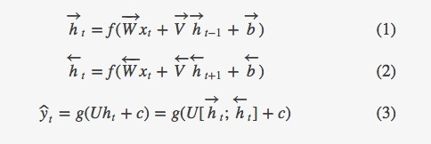
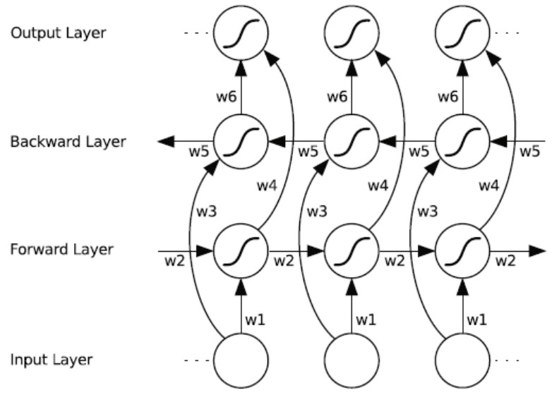
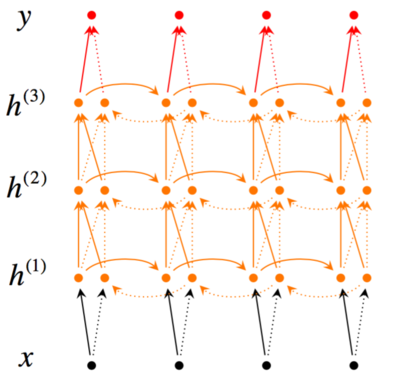
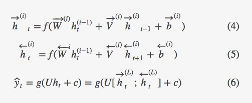

<!-- build time:Thu Sep 19 2019 09:11:00 GMT+0800 (China Standard Time) --><!DOCTYPE html><html><head><meta name="generator" content="Hexo 3.8.0"><meta charset="utf-8"><meta http-equiv="X-UA-Compatible" content="IE=edge,chrome=1"><meta name="viewport" content="width=device-width,initial-scale=1,maximum-scale=1,minimum-scale=1,user-scalable=no,minimal-ui"><meta name="renderer" content="webkit"><meta http-equiv="Cache-Control" content="no-transform"><meta http-equiv="Cache-Control" content="no-siteapp"><meta name="apple-mobile-web-app-capable" content="yes"><meta name="apple-mobile-web-app-status-bar-style" content="black"><meta name="format-detection" content="telephone=no,email=no,adress=no"><meta name="theme-color" content="#000000"><meta http-equiv="window-target" content="_top"><title>Tensorflow基础知识---Bidirectional_RNN | Yu Li</title><meta name="description" content="写在前面最近在做一些自然语言处理demo的时候遇到了双向RNN，里面的bidirectional_dynamic_rnn和static_bidirectional_rnn还是值得理解下的，故记录下自己的学习心得。 双向RNNs双向RNNs模型是RNN的扩展模型，RNN模型在处理序列模型的学习上主要是依靠上文的信息，双向RNNs模型认为模型的输出不仅仅依靠序列前面的元素，后面的元素对输出也有影响。"><meta name="keywords" content="Tensorflow,Tensorflow基础知识"><meta property="og:type" content="article"><meta property="og:title" content="Tensorflow基础知识---Bidirectional_RNN"><meta property="og:url" content="http://sthsf.github.io/2017/08/31/Tensorflow基础知识-bidirectional-rnn/index.html"><meta property="og:site_name" content="Yu Li&#39;s personal blog"><meta property="og:description" content="写在前面最近在做一些自然语言处理demo的时候遇到了双向RNN，里面的bidirectional_dynamic_rnn和static_bidirectional_rnn还是值得理解下的，故记录下自己的学习心得。 双向RNNs双向RNNs模型是RNN的扩展模型，RNN模型在处理序列模型的学习上主要是依靠上文的信息，双向RNNs模型认为模型的输出不仅仅依靠序列前面的元素，后面的元素对输出也有影响。"><meta property="og:locale" content="default"><meta property="og:image" content="http://sthsf.github.io/2017/08/31/Tensorflow基础知识-bidirectional-rnn/RNN-bidirectional.png"><meta property="og:image" content="http://sthsf.github.io/2017/08/31/Tensorflow基础知识-bidirectional-rnn/compute_formula.png"><meta property="og:image" content="http://sthsf.github.io/2017/08/31/Tensorflow基础知识-bidirectional-rnn/bidirectionl-RNN-unrolling.png"><meta property="og:image" content="http://sthsf.github.io/2017/08/31/Tensorflow基础知识-bidirectional-rnn/multi_bidirectional_rnns.png"><meta property="og:image" content="http://sthsf.github.io/2017/08/31/Tensorflow基础知识-bidirectional-rnn/compute_formula2.png"><meta property="og:updated_time" content="2017-09-14T02:22:59.000Z"><meta name="twitter:card" content="summary"><meta name="twitter:title" content="Tensorflow基础知识---Bidirectional_RNN"><meta name="twitter:description" content="写在前面最近在做一些自然语言处理demo的时候遇到了双向RNN，里面的bidirectional_dynamic_rnn和static_bidirectional_rnn还是值得理解下的，故记录下自己的学习心得。 双向RNNs双向RNNs模型是RNN的扩展模型，RNN模型在处理序列模型的学习上主要是依靠上文的信息，双向RNNs模型认为模型的输出不仅仅依靠序列前面的元素，后面的元素对输出也有影响。"><meta name="twitter:image" content="http://sthsf.github.io/2017/08/31/Tensorflow基础知识-bidirectional-rnn/RNN-bidirectional.png"><link rel="canonical" href="http://sthsf.github.io/2017/08/31/Tensorflow基础知识-bidirectional-rnn/index.html"><link rel="icon" href="/favicon.png" type="image/x-icon"><link href="https://cdn.bootcss.com/font-awesome/4.7.0/css/font-awesome.min.css" rel="stylesheet"><link rel="stylesheet" href="/css/style.css"><link href="https://cdn.bootcss.com/KaTeX/0.7.1/katex.min.css" rel="stylesheet"></head></html><body class="main-center" itemscope itemtype="http://schema.org/WebPage"><header class="header" itemscope itemtype="http://schema.org/WPHeader"><div class="slimContent"><div class="navbar-header"><div class="profile-block text-center"><a id="avatar" href="https://github.com/sthsf" target="_blank"></a><h2 id="name" class="hidden-xs hidden-sm">Yu Li</h2><h3 id="title" class="hidden-xs hidden-sm hidden-md">Algorithm Developer &amp; Designer</h3><small id="location" class="text-muted hidden-xs hidden-sm"><i class="fa fa-map-marker"></i> ShangHai, China</small></div><div class="search" id="search-form-wrap"><form class="search-form sidebar-form"><div class="input-group"><input type="text" class="search-form-input form-control" placeholder="Search"> <span class="input-group-btn"><button type="submit" class="search-form-submit btn btn-flat"><i class="fa fa-search"></i></button></span></div></form><div class="ins-search"><div class="ins-search-mask"></div><div class="ins-search-container"><div class="ins-input-wrapper"><input type="text" class="ins-search-input" placeholder="Type something..." x-webkit-speech> <button type="button" class="close ins-close ins-selectable" data-dismiss="modal" aria-label="Close"><span aria-hidden="true">×</span></button></div><div class="ins-section-wrapper"><div class="ins-section-container"></div></div></div></div></div><button class="navbar-toggle collapsed" type="button" data-toggle="collapse" data-target="#main-navbar" aria-controls="main-navbar" aria-expanded="false"><span class="sr-only">Toggle navigation</span> <span class="icon-bar"></span> <span class="icon-bar"></span> <span class="icon-bar"></span></button></div><nav id="main-navbar" class="collapse navbar-collapse" itemscope itemtype="http://schema.org/SiteNavigationElement" role="navigation"><ul class="nav navbar-nav main-nav"><li class="menu-item menu-item-about"><a href="/about"><i class="fa fa-fw fa-coffee"></i> <span class="menu-title">About</span></a></li><li class="menu-item menu-item-home"><a href="/."><i class="fa fa-fw fa-dashboard"></i> <span class="menu-title">Home</span></a></li><li class="menu-item menu-item-archives"><a href="/archives"><i class="fa fa-fw fa-delicious"></i> <span class="menu-title">Archives</span></a></li><li class="menu-item menu-item-categories"><a href="/categories"><i class="fa fa-fw fa-folder"></i> <span class="menu-title">Categories</span></a></li><li class="menu-item menu-item-tags"><a href="/tags"><i class="fa fa-fw fa-tags"></i> <span class="menu-title">Tags</span></a></li><li class="menu-item menu-item-repository"><a href="/repository"><i class="fa fa-fw fa-code"></i> <span class="menu-title">Repository</span></a></li><li class="menu-item menu-item-links"><a href="/links"><i class="fa fa-fw fa-gg"></i> <span class="menu-title">Links</span></a></li><li class="menu-item menu-item-books"><a href="/books"><i class="fa fa-fw fa-leanpub"></i> <span class="menu-title">Books</span></a></li></ul><ul class="social-links"><li><a href="https://github.com/sthsf" target="_blank" title="Github" data-toggle="tooltip" data-placement="top"><i class="fa fa-github"></i></a></li><li><a href="http://weibo.com/sthsf" target="_blank" title="Weibo" data-toggle="tooltip" data-placement="top"><i class="fa fa-weibo"></i></a></li><li><a href="https://twitter.com/iwebued" target="_blank" title="Twitter" data-toggle="tooltip" data-placement="top"><i class="fa fa-twitter"></i></a></li><li><a href="/atom.xml" target="_blank" title="Rss" data-toggle="tooltip" data-placement="top"><i class="fa fa-rss"></i></a></li></ul></nav></div></header><aside class="sidebar" itemscope itemtype="http://schema.org/WPSideBar"><div class="slimContent"><div class="widget"><h3 class="widget-title">Tags</h3><div class="widget-body"><ul class="tag-list"><li class="tag-list-item"><a class="tag-list-link" href="/tags/Blog/">Blog</a><span class="tag-list-count">1</span></li><li class="tag-list-item"><a class="tag-list-link" href="/tags/Deeplearning/">Deeplearning</a><span class="tag-list-count">1</span></li><li class="tag-list-item"><a class="tag-list-link" href="/tags/Hexo/">Hexo</a><span class="tag-list-count">1</span></li><li class="tag-list-item"><a class="tag-list-link" href="/tags/Tensorflow/">Tensorflow</a><span class="tag-list-count">4</span></li><li class="tag-list-item"><a class="tag-list-link" href="/tags/Tensorflow基础知识/">Tensorflow基础知识</a><span class="tag-list-count">3</span></li><li class="tag-list-item"><a class="tag-list-link" href="/tags/ValueError/">ValueError</a><span class="tag-list-count">1</span></li><li class="tag-list-item"><a class="tag-list-link" href="/tags/python/">python</a><span class="tag-list-count">1</span></li><li class="tag-list-item"><a class="tag-list-link" href="/tags/智能问答系统/">智能问答系统</a><span class="tag-list-count">1</span></li><li class="tag-list-item"><a class="tag-list-link" href="/tags/概率论/">概率论</a><span class="tag-list-count">1</span></li><li class="tag-list-item"><a class="tag-list-link" href="/tags/知识图谱/">知识图谱</a><span class="tag-list-count">1</span></li><li class="tag-list-item"><a class="tag-list-link" href="/tags/统计学习/">统计学习</a><span class="tag-list-count">1</span></li><li class="tag-list-item"><a class="tag-list-link" href="/tags/综述/">综述</a><span class="tag-list-count">2</span></li></ul></div></div><div class="widget"><h3 class="widget-title">Categories</h3><div class="widget-body"><ul class="category-list"><li class="category-list-item"><a class="category-list-link" href="/categories/Hexo/">Hexo</a><span class="category-list-count">1</span></li><li class="category-list-item"><a class="category-list-link" href="/categories/Tensorflow/">Tensorflow</a><span class="category-list-count">1</span></li><li class="category-list-item"><a class="category-list-link" href="/categories/Tensorflow基础知识/">Tensorflow基础知识</a><span class="category-list-count">3</span></li><li class="category-list-item"><a class="category-list-link" href="/categories/python基础知识/">python基础知识</a><span class="category-list-count">1</span></li><li class="category-list-item"><a class="category-list-link" href="/categories/智能问答系统/">智能问答系统</a><span class="category-list-count">1</span></li><li class="category-list-item"><a class="category-list-link" href="/categories/知识图谱/">知识图谱</a><span class="category-list-count">1</span></li><li class="category-list-item"><a class="category-list-link" href="/categories/统计学习/">统计学习</a><span class="category-list-count">1</span></li></ul></div></div><div class="widget"><h3 class="widget-title">Archive</h3><div class="widget-body"><ul class="archive-list"><li class="archive-list-item"><a class="archive-list-link" href="/archives/2019/08/">August 2019</a><span class="archive-list-count">1</span></li><li class="archive-list-item"><a class="archive-list-link" href="/archives/2019/03/">March 2019</a><span class="archive-list-count">2</span></li><li class="archive-list-item"><a class="archive-list-link" href="/archives/2017/09/">September 2017</a><span class="archive-list-count">2</span></li><li class="archive-list-item"><a class="archive-list-link" href="/archives/2017/08/">August 2017</a><span class="archive-list-count">2</span></li><li class="archive-list-item"><a class="archive-list-link" href="/archives/2017/06/">June 2017</a><span class="archive-list-count">1</span></li><li class="archive-list-item"><a class="archive-list-link" href="/archives/2017/03/">March 2017</a><span class="archive-list-count">1</span></li></ul></div></div><div class="widget"><h3 class="widget-title">Recent Posts</h3><div class="widget-body"><ul class="recent-post-list list-unstyled no-thumbnail"><li><div class="item-inner"><p class="item-category"><a class="category-link" href="/categories/python基础知识/">python基础知识</a></p><p class="item-title"><a href="/2019/08/24/python基础知识--协程/" class="title">python与协程</a></p><p class="item-date"><time datetime="2019-08-24T02:09:46.000Z" itemprop="datePublished">2019-08-24</time></p></div></li><li><div class="item-inner"><p class="item-category"><a class="category-link" href="/categories/智能问答系统/">智能问答系统</a></p><p class="item-title"><a href="/2019/03/16/智能问答系统的探索和实践/" class="title">智能问答系统的探索和实践</a></p><p class="item-date"><time datetime="2019-03-16T02:09:46.000Z" itemprop="datePublished">2019-03-16</time></p></div></li><li><div class="item-inner"><p class="item-category"><a class="category-link" href="/categories/知识图谱/">知识图谱</a></p><p class="item-title"><a href="/2019/03/15/知识图谱的基础知识和应用场景/" class="title">知识图谱的基础知识和应用场景</a></p><p class="item-date"><time datetime="2019-03-15T02:09:46.000Z" itemprop="datePublished">2019-03-15</time></p></div></li><li><div class="item-inner"><p class="item-category"><a class="category-link" href="/categories/Tensorflow基础知识/">Tensorflow基础知识</a></p><p class="item-title"><a href="/2017/09/14/Tensorflow中的共享变量机制/" class="title">Tensorflow中的共享变量机制</a></p><p class="item-date"><time datetime="2017-09-14T02:14:56.000Z" itemprop="datePublished">2017-09-14</time></p></div></li><li><div class="item-inner"><p class="item-category"><a class="category-link" href="/categories/Tensorflow基础知识/">Tensorflow基础知识</a></p><p class="item-title"><a href="/2017/09/04/Tensorflow中dynamic-rnn和row-rnn的区别/" class="title">Tensorflow中dynamic_rnn和row_rnn的区别</a></p><p class="item-date"><time datetime="2017-09-04T00:58:38.000Z" itemprop="datePublished">2017-09-04</time></p></div></li></ul></div></div></div></aside><main class="main" role="main"><div class="content"><article id="post-Tensorflow基础知识-bidirectional-rnn" class="article article-type-post" itemscope itemtype="http://schema.org/BlogPosting"><div class="article-header"><h1 class="article-title" itemprop="name">Tensorflow基础知识---Bidirectional_RNN</h1><div class="article-meta"><span class="article-date"><i class="fa fa-calendar-check-o"></i> <a href="/2017/08/31/Tensorflow基础知识-bidirectional-rnn/" class="article-date"><time datetime="2017-08-31T02:17:27.000Z" itemprop="datePublished">2017-08-31</time></a></span> <span class="article-category"><i class="fa fa-folder"></i> <a class="article-category-link" href="/categories/Tensorflow基础知识/">Tensorflow基础知识</a></span> <span class="article-tag"><i class="fa fa-tag"></i> <a class="article-tag-link" href="/tags/Tensorflow/">Tensorflow</a>, <a class="article-tag-link" href="/tags/Tensorflow基础知识/">Tensorflow基础知识</a></span> <span class="article-read hidden-xs"><i class="fa fa-eye" aria-hidden="true"></i> <span id="busuanzi_container_page_pv">阅读<span id="busuanzi_value_page_pv">0</span>次</span></span> <span class="post-comment"><i class="fa fa-commenting-o"></i> <a href="/2017/08/31/Tensorflow基础知识-bidirectional-rnn/#comments" class="article-comment-link">Comments</a></span> <span class="post-wordcount hidden-xs" itemprop="wordCount">字数统计: 1,679(字)</span> <span class="post-readcount hidden-xs" itemprop="timeRequired">阅读时长: 7(分)</span></div></div><div class="article-entry markdown-body" itemprop="articleBody"><h1 id="写在前面"><a class="markdownIt-Anchor" href="#写在前面"></a> 写在前面</h1><p>最近在做一些自然语言处理demo的时候遇到了双向RNN，里面的bidirectional_dynamic_rnn和static_bidirectional_rnn还是值得理解下的，故记录下自己的学习心得。</p><h1 id="双向rnns"><a class="markdownIt-Anchor" href="#双向rnns"></a> 双向RNNs</h1><p>双向RNNs模型是RNN的扩展模型，RNN模型在处理序列模型的学习上主要是依靠上文的信息，双向RNNs模型认为模型的输出不仅仅依靠序列前面的元素，后面的元素对输出也有影响。比如说，想要预测序列中的一个缺失值，我们不仅仅要考虑该缺失值前面的元素，而且要考虑他后面的元素。</p><p>简单点来将两个RNN堆叠在一起，分别从两个方向计算序列的output和state，而最终的输出则根据两个RNNs的隐藏状态计算，如下图所示。</p><center></center><center>Figure 1: A bidirectional RNN model</center><p>在每一个时间节点<span class="katex"><span class="katex-mathml"><math><semantics><mrow><mo>(</mo><msub><mi>x</mi><mi>t</mi></msub><mo>)</mo></mrow><annotation encoding="application/x-tex">(x_t)</annotation></semantics></math></span><span class="katex-html" aria-hidden="true"><span class="strut" style="height:.75em"></span><span class="strut bottom" style="height:1em;vertical-align:-.25em"></span><span class="base textstyle uncramped"><span class="mopen">(</span><span class="mord"><span class="mord mathit">x</span><span class="vlist"><span style="top:.15em;margin-right:.05em;margin-left:0"><span class="fontsize-ensurer reset-size5 size5"><span style="font-size:0">​</span></span><span class="reset-textstyle scriptstyle cramped"><span class="mord mathit">t</span></span></span><span class="baseline-fix"><span class="fontsize-ensurer reset-size5 size5"><span style="font-size:0">​</span></span>​</span></span></span><span class="mclose">)</span></span></span></span>，这个网络有两层神经元，一层从左向右传播，另一层从右向左传播。为了保证任何时刻t都有两层隐层，这个网络需要消耗两倍的存储量来存储权重和偏置等参数。最终的分类结果是由两层RNN隐层组合来产生最终的结果。</p><p>公式1和2表示双向RNN隐层的数学含义。在这两个关系中唯一不同点是循环的方向不一样。公式3展示了通过总结过去和未来词的表示，使用类别的关系来预测下一个词预测。</p><center></center><p>双向循环神经网络的基本思想是提出每一个训练序列向前和向后分别是两个循环神经网络，而且这两个都连接着一个输出层，这个结构提供给输出层输入序列中每个点的完整的过去和未来的上下文信息。</p><p>下图展示的是一个沿着时间展开的双向循环神经网络。六个独特的权值在每一时步被重复的利用，六个权值分别对应：输入到向前和向后隐含层(w1,w3)，隐含层到隐含层自己(w2, w5),向前和向后隐含层到输出层(w4, w6)。</p><p>值得注意的是：向后和向前隐含层之间没有信息流，是独立计算的，只是最后输出的时候把二者的状态向量结合起来，这保证了展开图是非循环的。</p><center></center><center>Figure 2: Bidirectional RNN model unrolling</center><h1 id="tensorflow中实现双向rnns"><a class="markdownIt-Anchor" href="#tensorflow中实现双向rnns"></a> Tensorflow中实现双向RNNs</h1><h2 id="tfcontribrnnbidirectional_dynamic_rnn"><a class="markdownIt-Anchor" href="#tfcontribrnnbidirectional_dynamic_rnn"></a> tf.contrib.rnn.bidirectional_dynamic_rnn()</h2><p>在tensorflow中已经提供了双向RNNs的接口，使用tf.contrib.rnn.bidirectional_dynamic_rnn()这个函数，就可以很方便的构建双向RNN网络。</p><p>首先看下接口的一些参数</p><figure class="highlight routeros"><table><tr><td class="gutter"><pre><span class="line">1</span><br><span class="line">2</span><br><span class="line">3</span><br><span class="line">4</span><br><span class="line">5</span><br><span class="line">6</span><br><span class="line">7</span><br><span class="line">8</span><br><span class="line">9</span><br><span class="line">10</span><br><span class="line">11</span><br><span class="line">12</span><br><span class="line">13</span><br><span class="line">14</span><br></pre></td><td class="code"><pre><span class="line">bidirectional_dynamic_rnn(</span><br><span class="line">    cell_fw, # 前向 rnn cell</span><br><span class="line">    cell_bw, # 反向 rnn cell</span><br><span class="line">    inputs, # 输入序列.</span><br><span class="line">    <span class="attribute">sequence_length</span>=None, # 输入序列的实际长度（可选，默认为输入序列的最大长度）</span><br><span class="line">    <span class="attribute">initial_state_fw</span>=None, # 前向rnn_cell的初始状态（可选）</span><br><span class="line">    <span class="attribute">initial_state_bw</span>=None, # 反向rnn_cell的初始状态（可选）</span><br><span class="line">    <span class="attribute">dtype</span>=None, # 初始化和输出的数据类型（可选）</span><br><span class="line">    <span class="attribute">parallel_iterations</span>=None,</span><br><span class="line">    <span class="attribute">swap_memory</span>=<span class="literal">False</span>,</span><br><span class="line">    <span class="attribute">time_major</span>=<span class="literal">False</span>,  # 决定了输入输出tensor的格式：如果为<span class="literal">true</span>, 向量的形状必须为 `[max_time, batch_size, depth]`. </span><br><span class="line">                       # 如果为<span class="literal">false</span>, tensor的形状必须为`[batch_size, max_time, depth]`. 与dynamic_rnn中的time_major类似。</span><br><span class="line">    <span class="attribute">scope</span>=None</span><br><span class="line">)</span><br></pre></td></tr></table></figure><p>函数的返回值：<br>一个（outputs, outputs_state）的一个元祖。</p><p>其中，</p><ul><li>outputs=(outputs_fw, outputs_bw),是一个包含前向cell输出tensor和后向tensor输出tensor组成的元祖。</li></ul><p>若time_major=false，则两个tensor的shape为[batch_size, max_time, depth]，应用在文本中时，max_time可以为句子的长度（一般以最长的句子为准，短句需要做padding），depth为输入句子词向量的维度。</p><p>最终的outputs需要使用tf.concat(outputs, 2)将两者合并起来。</p><ul><li>outputs_state = (outputs_state_fw， output_state_bw),包含了前向和后向最后的隐藏状态的组成的元祖。outputs_state_fw和output_state_bw的类型都是LSTMStateTuple。LSTMStateTuple由(c, h)组成，分别代表memory cell和hidden state</li></ul><p>cell_fw和cell_bw的定义是完全一样的，如果两个cell都定义成LSTM就变成说了双向LSTM了。</p><figure class="highlight python"><table><tr><td class="gutter"><pre><span class="line">1</span><br><span class="line">2</span><br><span class="line">3</span><br><span class="line">4</span><br><span class="line">5</span><br></pre></td><td class="code"><pre><span class="line"><span class="keyword">import</span> tensorflow <span class="keyword">as</span> tf </span><br><span class="line"><span class="comment"># 正向传播的rnn_cell单元，这里使用的是LSRTMCell</span></span><br><span class="line">cell_fw_lstm = tf.nn.rnn_cell.LSTMCell(<span class="string">'num_units'</span>)</span><br><span class="line"><span class="comment"># 反向传播的rnn_cell单元，与正向传播的rnn单元相同</span></span><br><span class="line">cell_bw_lstm = tf.nn.rnn_cell.LSTMCell(<span class="string">'num_units'</span>)</span><br></pre></td></tr></table></figure><p>在bidirectional_dynamic_rnn函数内部，会通过array_ops.reverse_sequence函数将输入序列逆序排列，使其达到反向传播的效果。</p><p>在实现的时候，我们只需要将定义好的两个cell作为参数传入就可以了：</p><figure class="highlight shell"><table><tr><td class="gutter"><pre><span class="line">1</span><br><span class="line">2</span><br><span class="line">3</span><br></pre></td><td class="code"><pre><span class="line">(outputs, outputs_state) = tf.nn.bidirectional_dynamic_rnn(cell_fw_lstm, cell_bw_lstm, inputs_embedded)</span><br><span class="line"><span class="meta">#</span><span class="bash"> inputs_embedded为输入的tensor，[batch_szie, max_time, depth]。batch_size为模型当中batch的大小.</span></span><br><span class="line"><span class="meta">#</span><span class="bash"> 应用在文本中时，max_time可以为句子的长度（一般以最长的句子为准，短句需要做padding），depth为输入句子词向量的维度。</span></span><br></pre></td></tr></table></figure><p>最终的输出outputs = tf.concat((outputs_fw, outputs_bw), 2)或者直接是outputs = tf.concat(outputs, 2)</p><p>如果还需要用到最后的输出状态，则需要对（outputs_state_fw， output_state_bw）处理:</p><figure class="highlight stylus"><table><tr><td class="gutter"><pre><span class="line">1</span><br><span class="line">2</span><br><span class="line">3</span><br><span class="line">4</span><br></pre></td><td class="code"><pre><span class="line">final_state_c = tf.concat((outputs_state_fw<span class="selector-class">.c</span>, outputs_state_bw.c), <span class="number">1</span>)</span><br><span class="line">final_state_h = tf.concat((outputs_state_fw<span class="selector-class">.h</span>, outputs_state_bw.h), <span class="number">1</span>)</span><br><span class="line">outputs_final_state = tf<span class="selector-class">.contrib</span><span class="selector-class">.rnn</span><span class="selector-class">.LSTMStateTuple</span>(c=final_state_c,</span><br><span class="line">                                                    h=final_state_h)</span><br></pre></td></tr></table></figure><h3 id="双向lsrtm的实现过如下"><a class="markdownIt-Anchor" href="#双向lsrtm的实现过如下"></a> 双向LSRTM的实现过如下：</h3><figure class="highlight python"><table><tr><td class="gutter"><pre><span class="line">1</span><br><span class="line">2</span><br><span class="line">3</span><br><span class="line">4</span><br><span class="line">5</span><br><span class="line">6</span><br><span class="line">7</span><br><span class="line">8</span><br><span class="line">9</span><br><span class="line">10</span><br><span class="line">11</span><br><span class="line">12</span><br><span class="line">13</span><br><span class="line">14</span><br><span class="line">15</span><br><span class="line">16</span><br><span class="line">17</span><br><span class="line">18</span><br><span class="line">19</span><br><span class="line">20</span><br><span class="line">21</span><br></pre></td><td class="code"><pre><span class="line"><span class="keyword">import</span> tensorflow <span class="keyword">as</span> tf </span><br><span class="line">vocab_size = <span class="number">1000</span></span><br><span class="line">embedding_size = <span class="number">50</span></span><br><span class="line">batch_size =<span class="number">100</span></span><br><span class="line">max_time = <span class="number">10</span></span><br><span class="line">hidden_units = <span class="number">10</span></span><br><span class="line"></span><br><span class="line">inputs = tf.placeholder(shape=(batch_size, max_time), dtype=tf.int32, name=<span class="string">'inputs'</span>)</span><br><span class="line">embedding = tf.Variable(tf.random_uniform([vocab_size, embedding_size], <span class="number">-1.0</span>, <span class="number">1.0</span>), dtype=tf.float32)</span><br><span class="line">inputs_embeded = tf.nn.embedding_lookup(embedding, inputs)</span><br><span class="line"></span><br><span class="line">lstm_cell = tf.nn.rnn_cell.BasicLSTMCell(hidden_units)</span><br><span class="line"></span><br><span class="line">((outputs_fw, outputs_bw), (outputs_state_fw, outputs_state_bw)) = tf.nn.bidirectional_dynamic_rnn(lstm_cell, lstm_cell, inputs_embeded, sequence_length=max_time)</span><br><span class="line"></span><br><span class="line">outputs = tf.concat((outputs_fw, outputs_bw), <span class="number">2</span>)</span><br><span class="line"></span><br><span class="line">final_state_c = tf.concat((outputs_state_fw.c, outputs_state_bw.c), <span class="number">1</span>)</span><br><span class="line">final_state_h = tf.concat((outputs_state_fw.h, outputs_state_bw.h), <span class="number">1</span>)</span><br><span class="line">outputs_final_state = tf.contrib.rnn.LSTMStateTuple(c=final_state_c,</span><br><span class="line">                                                    h=final_state_h)</span><br></pre></td></tr></table></figure><h2 id="tfcontribrnnstatic_bidirectional_rnn"><a class="markdownIt-Anchor" href="#tfcontribrnnstatic_bidirectional_rnn"></a> tf.contrib.rnn.static_bidirectional_rnn()</h2><h1 id="多层双向rnns"><a class="markdownIt-Anchor" href="#多层双向rnns"></a> 多层双向RNNs</h1><p>图三展示了一个从较低层传播到下层的多层双向RNN。如图所示，在网络结构中，第t个时间里每一个中间神经元接受到前一个时间（同样的RNN层）传递过来的一组参数，以及之前RNN层传递过来的两组参数。这两组参数一个是从左到右的RNN输入，另一个是从右到左的RNN输入。</p><center></center><center>Figure 3: Multi-Bidirectional RNN model</center><p>为了构建一个L层的RNN，上述的关系将会参照公式4和公式5所修改，其中每一个中间神经元（第i层）的输入是RNN网络中同样的t时刻第i-1层的输出。其中输出，在每一个时刻值为通过所有隐层的输入参数传播的结果（如公式6所示）。</p><center></center><h2 id="参考文献"><a class="markdownIt-Anchor" href="#参考文献"></a> 参考文献</h2><p><a href="http://blog.csdn.net/wuzqChom/article/details/75453327" target="_blank" rel="noopener">tensorflow.nn.bidirectional_dynamic_rnn()函数的用法</a></p><p><a href="https://www.zybuluo.com/hanxiaoyang/note/438990" target="_blank" rel="noopener">深度学习与自然语言处理(7)_斯坦福cs224d 语言模型，RNN，LSTM与GRU</a></p><p><a href="http://blog.csdn.net/u012436149/article/details/71080601" target="_blank" rel="noopener">tensorflow学习笔记(三十九):双向rnn</a></p></div><div class="article-footer"><blockquote class="mt-2x"><ul class="post-copyright list-unstyled"><li class="post-copyright-link hidden-xs"><strong>本文链接：</strong> <a href="http://sthsf.github.io/2017/08/31/Tensorflow基础知识-bidirectional-rnn/" title="Tensorflow基础知识---Bidirectional_RNN" target="_blank" rel="external">http://sthsf.github.io/2017/08/31/Tensorflow基础知识-bidirectional-rnn/</a></li><li class="post-copyright-license"><strong>版权声明： </strong>本博客所有文章除特别声明外，均采用 <a href="http://creativecommons.org/licenses/by/4.0/deed.zh" target="_blank" rel="external">CC BY 4.0 CN协议</a> 许可协议。转载请注明出处！</li></ul></blockquote><div class="panel panel-default panel-badger"><div class="panel-body"><figure class="media"><div class="media-left"><a href="https://github.com/sthsf" target="_blank" class="img-burn thumb-sm visible-lg"></a></div><div class="media-body"><h3 class="media-heading"><a href="https://github.com/sthsf" target="_blank"><span class="text-dark">Yu Li</span><small class="ml-1x">Algorithm Developer &amp; Designer</small></a></h3><div></div></div></figure></div></div></div></article><section id="comments"><div id="uyan_frame"></div></section></div><nav class="bar bar-footer clearfix" data-stick-bottom><div class="bar-inner"><ul class="pager pull-left"><li class="prev"><a href="/2017/09/04/Tensorflow中dynamic-rnn和row-rnn的区别/" title="Tensorflow中dynamic_rnn和row_rnn的区别"><i class="fa fa-angle-left" aria-hidden="true"></i>&nbsp;&nbsp;Newer</a></li><li class="next"><a href="/2017/08/24/极大似然估计学习总结/" title="极大似然估计学习总结">Older&nbsp;&nbsp;<i class="fa fa-angle-right" aria-hidden="true"></i></a></li></ul><button type="button" class="btn btn-fancy btn-donate pop-onhover bg-gradient-warning hidden-xs" data-toggle="modal" data-target="#donateModal"><span>$</span></button><div class="bar-right"><div class="share-component" data-sites="weibo,qq,wechat,facebook,twitter, baidu" data-mobile-sites="weibo,qq,qzone"></div></div></div></nav><div class="modal modal-center modal-xs-full fade" id="donateModal" tabindex="-1" role="dialog"><div class="modal-dialog" role="document"><div class="modal-content"><button type="button" class="close" data-dismiss="modal" aria-label="Close"><span aria-hidden="true">&times;</span></button><div class="modal-body"><div class="donate-box"><div class="donate-tit"><p>Thank you for your support, I will continue to work hard!</p></div><div class="donate-payimg"></div><p class="text-muted mv">Scan this qrcode</p><div class="donate-payselect"><div class="pay_item checked" data-id="alipay" data-src="/images/donate/alipayimg.png"><div class="radio"><input type="radio" name="payment" id="input-alipay" value="alipay" checked><label class="pay_logo clickable" for="input-alipay"></label></div></div><div class="pay_item" data-id="weipay" data-src="/images/donate/weipayimg.png"><div class="radio"><input type="radio" name="payment" id="input-weipay" value="weipay"><label class="pay_logo clickable" for="input-weipay"></label></div></div></div><div class="text-grey"><p>Open<span id="donate-pay_txt">alipay</span>Scan this qrcode, you can sweep yards reward oh!</p></div></div></div></div></div></div></main><footer class="footer" itemscope itemtype="http://schema.org/WPFooter"><ul class="social-links"><li><a href="https://github.com/sthsf" target="_blank" title="Github" data-toggle="tooltip" data-placement="top"><i class="fa fa-github"></i></a></li><li><a href="http://weibo.com/sthsf" target="_blank" title="Weibo" data-toggle="tooltip" data-placement="top"><i class="fa fa-weibo"></i></a></li><li><a href="https://twitter.com/iwebued" target="_blank" title="Twitter" data-toggle="tooltip" data-placement="top"><i class="fa fa-twitter"></i></a></li><li><a href="/atom.xml" target="_blank" title="Rss" data-toggle="tooltip" data-placement="top"><i class="fa fa-rss"></i></a></li></ul><div class="copyright">&copy; 2019 Yu Li<div class="publishby">Theme by <a href="https://github.com/cofess" target="_blank">cofess </a>base on <a href="https://github.com/cofess/hexo-theme-pure" target="_blank">pure</a>.</div></div></footer><script src="https://cdn.bootcss.com/jquery/1.12.4/jquery.min.js"></script><script>window.jQuery||document.write('<script src="js/jquery.min.js"><\/script>')</script><script src="/js/plugin.js"></script><script src="/js/application.js"></script><script>!function(T){var n={TRANSLATION:{POSTS:"Posts",PAGES:"Pages",CATEGORIES:"Categories",TAGS:"Tags",UNTITLED:"(Untitled)"},ROOT_URL:"/",CONTENT_URL:"/content.json"};T.INSIGHT_CONFIG=n}(window)</script><script src="/js/insight.js"></script><script defer src="//dn-lbstatics.qbox.me/busuanzi/2.3/busuanzi.pure.mini.js"></script><script defer type="text/javascript" src="http://v2.uyan.cc/code/uyan.js?uid=[object Object]"></script><script defer>var _hmt=_hmt||[];!function(){var e=document.createElement("script");e.src="//hm.baidu.com/hm.js?f4564a0992521543e48ba54ba9be25a5";var t=document.getElementsByTagName("script")[0];t.parentNode.insertBefore(e,t)}()</script></body><!-- rebuild by neat -->